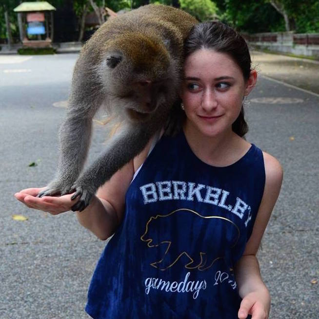

<div class="member-page" ng-controller="SamanthaCtrl">
	<div class="member-container">
		<div class="member">
			<div class="circular"></div>
    		<div class="info">
    			<div class="name">Samantha Cristol</div>
    			<div class="bio">Samantha is a freshman in civil engineering, a sorority girl, and a recreational photographer. She shoots with a Nikon D7000 and has been photographing for over 6 years.</div>
    		</div>
		</div>
		<div class="pieces" ng-repeat="image in pieces track by $index">
			
		</div>
	</div>
</div>